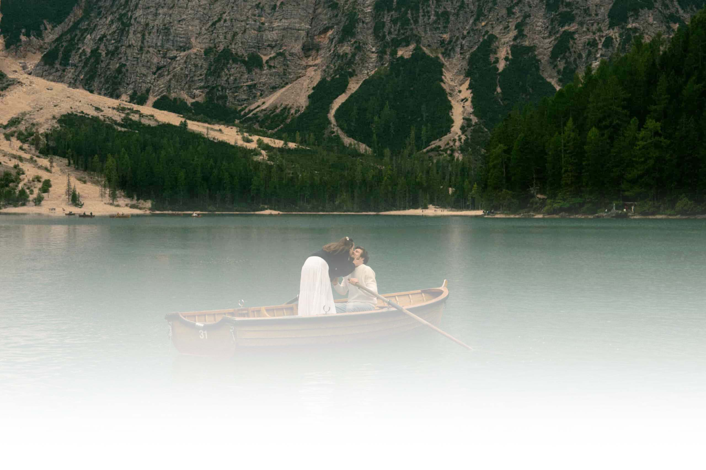

Vi hos
Trygg-Hansa
Vilka är vi?
Trygg-Hansa är inte bara ett försäkringsbolag – vi är en del av den svenska historien. Sedan vi grundades 1828 har vårt uppdrag varit detsamma: att skapa en tryggare vardag för människor, företag och djur. Idag är vi ett av Sveriges största och mest etablerade försäkringsbolag, och vi är stolta över att vara en trygg hamn för över 1,3 miljoner kunder.
Vår filosofi: Förebygga hellre än att bara ersätta
Vi tror att den bästa skadan är den som aldrig inträffar. Därför lägger vi stor vikt vid det förebyggande arbetet. Från våra ikoniska livbojar vid svenska vatten till digitala verktyg som hjälper dig att undvika vattenskador i hemmet – vårt mål är att du ska känna dig säker, oavsett var i livet du befinner dig.
Vilka är vi?
Trygg-Hansa är inte bara ett försäkringsbolag – vi är en del av den svenska historien. Sedan vi grundades 1828 har vårt uppdrag varit detsamma: att skapa en tryggare vardag för människor, företag och djur. Idag är vi ett av Sveriges största och mest etablerade försäkringsbolag, och vi är stolta över att vara en trygg hamn för över 1,3 miljoner kunder.
Vår filosofi: Förebygga hellre än att bara ersätta
Vi tror att den bästa skadan är den som aldrig inträffar. Därför lägger vi stor vikt vid det förebyggande arbetet. Från våra ikoniska livbojar vid svenska vatten till digitala verktyg som hjälper dig att undvika vattenskador i hemmet – vårt mål är att du ska känna dig säker, oavsett var i livet du befinner dig.
Ett team av experter
Bakom varje försäkringsbrev och varje skadeanmälan finns vårt engagerade team. Hos Trygg-Hansa möter du:
Skaderådgivare: Specialister som guidar dig genom svåra stunder med empati och expertkunskap.
Riskbedömare: Experter som analyserar framtidens utmaningar, från klimatförändringar till digital säkerhet, för att ständigt förbättra våra skydd.
Hållbarhetsteam: Medarbetare som arbetar dedikerat med att minska vårt klimatavtryck och driva sociala initiativ som främjar psykisk hälsa hos unga.
Vi är ett team som kombinerar mångårig erfarenhet med modern innovation. Genom att förena mänsklig omtanke med smart teknik ser vi till att hjälpen alltid är nära till hands – oavsett om det sker via ett personligt samtal eller vår digitala plattform.

En del av något större
Trygg-Hansa är en del av den internationella försäkringskoncernen Tryg, vilket ger oss en unik styrka. Det betyder att vi kombinerar den lokala känslan och kännedomen om den svenska marknaden med den finansiella stabiliteten och innovationskraften hos en av Nordens största försäkringsaktörer.
Vårt samhällsengagemang
Vi tar vårt ansvar på allvar. Genom åren har vi:
Placerat ut över 80 000 livbojar runt om i Sverige, vilket räddar liv varje år.
Investerat i forskning och projekt för att öka trafiksäkerheten.
Utvecklat marknadsledande barnförsäkringar som ger stöd vid både fysiska olycksfall och psykisk ohälsa.
Varför vi gör det vi gör
Vårt team drivs av en gemensam vision:
Att vara där när det gäller. Vi vet att försäkringar handlar om mer än bara pengar – det handlar om att kunna sova gott om natten, att våga satsa på sina drömmar och att veta att det finns ett skyddsnät om livet tar en oväntad vändning.